1) Decida se cada afirmação a seguir é verdadeira ou falsa e marque com caneta sua resposta no quadro abaixo. Atenção: responda todos os itens, use "N = não sei" caso você não saiba a resposta. Cada resposta certa vale 0.3, cada resposta errada vale -0.2, cada resposta N vale 0. Respostas confusas e ou rasuradas valerão -0.2.
1.a)
Seja P uma transformação linear de
 tal que
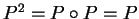, então
P é uma
projeção ortogonal.
tal que
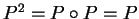, então
P é uma
projeção ortogonal.
Falso: Por exemplo considere P sendo a identidade.
1.b)
Considere vetores v, y e w de
 linearmente dependentes.
Então existem números reais
linearmente dependentes.
Então existem números reais  e
e  tais que
tais que
 .
.
Falso: É suficiente considerar vetores y e w colineares e v qualquer vetor não paralelo a y e w. Os vetores são l.d. e v não pode ser escrito como combinação linear de y e w. Por exemplo, considere os vetores v=(1,1,1), y=(1,0,1) e w=(2,0,2).
1.c) Seja 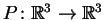 uma projeção ortogonal em um plano e 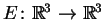 um espelhamento em um plano. Então 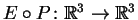 é uma projeção ortogonal.
Falso:
É suficiente considerar uma projeção e um espelhamento em planos
diferentes. Por exemplo, sejam P a projeção ortogonal no plano z=0 e
E o espelhamento no plano y=0.
As matrizes de E e P são
1.d)
Sejam  ,
,  e
e  três planos de
três planos de
 contendo a origem
e P1, P2 e P3 as respetivas projeções ortogonais
nestes planos. Suponha que
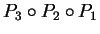 é a
transformação linear nula. Então os planos se
interceptam em um ponto.
contendo a origem
e P1, P2 e P3 as respetivas projeções ortogonais
nestes planos. Suponha que
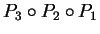 é a
transformação linear nula. Então os planos se
interceptam em um ponto.
Verdadeiro: Se se interceptaram em mais de um ponto a interseção conteria uma reta r contendo a origem. Seja 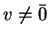 o vetor diretor da reta r. Como v pertence a todos os planos, P1(v)=P2(v)=P3(v)=v. Logo 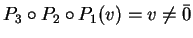, e a transformação é diferente da transformação nula.
1.e)
Dada uma base
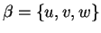 de
 considere a nova base
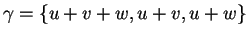 de
considere a nova base
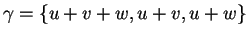 de
 .
Considere o vetor h cujas coordenadas na base
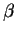 são (1,1,1). Então as coordenadas
de h na base
.
Considere o vetor h cujas coordenadas na base
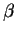 são (1,1,1). Então as coordenadas
de h na base  são
(1/3,2/3,1/3).
são
(1/3,2/3,1/3).
Falso:
Se as coordenadas de h na base  fossem
(1/3,2/3,1/3)teriamos
fossem
(1/3,2/3,1/3)teriamos
1.f)
A matriz
Verdadeiro:
O determinante da matriz é independente
de a e vale -1, logo a matriz é sempre inversível
(tem determinante não nulo).
1.g)
Seja A uma matriz  inversível. Suponha
que A2=2 A. Então 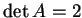.
inversível. Suponha
que A2=2 A. Então 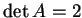.
Falso:
Como o determinante do produto é igual ao produto dos determinantes
e A2=(2I)A (I a matriz identidade), temos
1.h) Existe uma projeção ortogonal tal que P(1,1,2)=(0,1,1).
Falso:
Caso existisse, teriamos que
1.i)
Existe uma transformação linear
 tal que
T(1,0,0)=(1,1),
T(1,1,0)=(1,1),
T(1,1,1)=(1,1).
tal que
T(1,0,0)=(1,1),
T(1,1,0)=(1,1),
T(1,1,1)=(1,1).
Verdadeiro:
Uma transformação linear definida em
 está determinada pelas imagens
de três vetores l.i., como é o caso. De fato, a matriz de T é
está determinada pelas imagens
de três vetores l.i., como é o caso. De fato, a matriz de T é
| Itens | V | F | N | |
| 1.a | F | |||
| 1.b | F | |||
| 1.c | F | |||
| 1.d | V | |||
| 1.e | F | |||
| 1.f | V | |||
| 1.g | F | |||
| 1.h | F | |||
| 1.i | V |
2) Estude quais das matrizes
2.a)
2.b)
Resposta:
Para o item (2.a) observe que
Também sabemos que não representa um espelhamento: seu determinante é nulo (e um espelhamento tem determinante não nulo).
Para o item (2b) veja que a matriz tem determinante nulo, logo não
pode representar um espelhamento.
Para ver se representa uma projeção vemos que
Os vetores paralelos à direção de projeção devem verificar
P(x,y)=(0,0). Para determinar esta direção resolvemos o sistema
3)
Considere a projeção
Pno plano
 na direção do vetor
(1,-1,-1).
na direção do vetor
(1,-1,-1).
3.a)
Considere o vetor
u=(4,-1,1)=(2,-2,-2)+(2,1,3)(onde
 ). Sem determinar a matriz de P, calcule
P(u).
). Sem determinar a matriz de P, calcule
P(u).
3.b) Determine a matriz de P.
3.c)
Sejam M a
projeção ortogonal na reta
(t,-t,-t) e N a projeção ortogonal no
plano
 .
Determine as matrizes de M e N.
.
Determine as matrizes de M e N.
3.d)
Determine as matrizes de  e 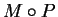.
e 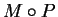.
Resposta:
Para o primeiro item observe que
P(2,-2,-2)=0 (pois (2,-2,-2) é paralelo à direção
de projeção)
e que
P(2,1,3)=(2,1,3) (pois (2,1,3) pertence ao plano de
projeção).
Logo, como P é linear,
Para determinar a matriz de P escolhemos uma base de  (por exemplo (1,0,1) e (0,1,1)) e acrescentamos o vetor
(1,-1,-1) para obter uma base de
(por exemplo (1,0,1) e (0,1,1)) e acrescentamos o vetor
(1,-1,-1) para obter uma base de
 .
Para cada vetor v escrevemos
.
Para cada vetor v escrevemos
Para o terceiro item observe que M+N=Id.
O vetor diretor unitário na direção da reta de projeção de
M é
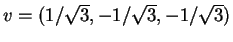.
Portanto,
Para o último item
observamos que a matriz de  é:
é:
Para calcular a matriz de
escrevemos
4)
Seja a base formada pelos vetores
 .
.
4.a)
Verifique que é uma base.
4.b) Determine as coordenadas do vetor v=(1,2,3) na base .
4.c)
Seja S a
transformação linear definida por
4.d) Determine se a matriz de S é inversível e em caso afirmativo determine sua inversa.
Resposta:
Para o item (a) é suficiente ver que o determinante cujas colunas
são os vetores da base é não nulo:
Para determinar as coordenadas do vetor (1,2,3) escrevemos
Para determinar a matriz de S observe que
Finalmente S não é inversível. Isto pode ser visto
calculando o determinante da matriz de S e vendo que é zero.
Mas nem é necessário fazer cálculos, os vetores
S(1,0,0), S(0,1,0) e S(0,0,1) são coplanares (e portanto
seu produto misto, igual ao determinante, é nulo):
todos estes vetores são (por definição) ortogonais a (1,1,1),
logo estão no plano x+y+z=0.